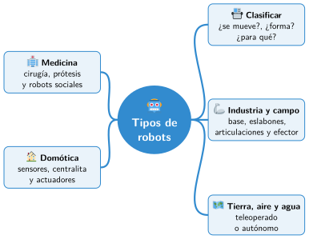

Bloque I · Robótica y sociedad
UD02 Tipos de robots y aplicaciones
Sesiones
- Sesión 2.1 Clasificación de los robots
- Sesión 2.2 Robots industriales y robots en la agricultura
- Sesión 2.3 Robots terrestres, aéreos y submarinos
- Sesión 2.4 Robots en medicina y robots sociales
- Sesión 2.5 La domótica: la casa como sistema de control
Al terminar la unidad
Mapa mental de la unidad

✏️ Repasa la unidad con el mapa: tapa una rama y explica en voz alta lo que pone.